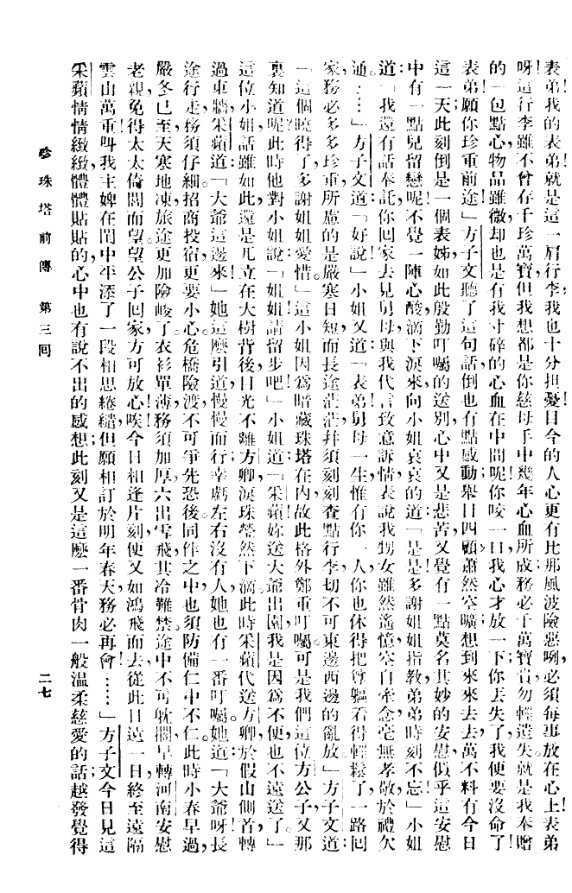

简体中文
—
设置会保存在本机，刷新后仍有效。
听一段真实录音，对照文字，再决定是否识别或进入档案。
越语 / 戏词
梁山伯与祝英台十八相送——一路景物，暗藏心意。
梁山伯與祝英臺十八相送——一路景物，暗藏心意。
Liang Shanbo and Zhu Yingtai’s farewell walk—scenery that hides a heart.
中文
同窗惜别，暗藏心意。
同窗惜別，暗藏心意。
Classmates part; meaning hides in the farewell.
English
Parting on the road—scenery that hides a heart.
首次使用可能需要一点时间准备识别工具，之后会更快。
先听这几段——点进去读剧情、跟时间轴。
·
越语听起来是什么样的？先听，再识别，再决定要不要深入探索。
听一遍真实的越语录音。
点击「听这段并识别」，等待转写。
查看越语、中文与 English；若命中档案，可进入原句时间轴。
梁祝短段——先听原声，再点下方识别。
你会听到（摘录）
梁山伯与祝英台十八相送——一路景物，暗藏心意。
你會聽到（摘錄）
梁山伯與祝英臺十八相送——一路景物，暗藏心意。
What you’ll hear (excerpt)
Liang Shanbo and Zhu Yingtai’s farewell walk—scenery that hides a heart.
识别之后
听完后可识别，再进入词典或档案继续探索。
首次使用可能需要一点时间准备识别工具，之后会更快。
· ·
还想继续
·
这个语言是什么意思、怎么读？词典是这里的核心——发音、释义，再接到真实录音。
词典
心
ein534
发音、释义，并可跳到档案语境。
中文：心（深开三平侵心）
中文：心（深開三平侵心）
English: heart / mind (Shengzhou reading)
范围说明：词典注音以嵊州读音为主，是越语（吴语绍兴一带）的重要地方变体，并不等同于「全部越语」。
範圍說明：詞典注音以嵊州讀音為主，是越語（吳語紹興一帶）的重要地方變體，並不等同於「全部越語」。
Scope: dictionary readings center on Shengzhou, a key local variety within Yueyu (Wu around Shaoxing)—not a claim to cover all Yueyu.
路径：词 → 发音 → 语境 → 档案
继续学习
这些语言与文化材料从哪里来？先接触一段戏腔、一页刻本，再进入完整档案。

用麦克风或上传试试识别；译文会显示在下方。若命中档案，可打开原句。
若有档案命中，可打开时间轴原句继续听。
推荐路径：梁祝示例 → 看档案命中 → 在档案中打开时间轴。
首次使用可能需要一点时间准备识别工具，之后会更快。
识别仍在试点阶段。方法与局限见「研究」——此处先听懂、接到档案。
跟读整段戏时勾选：只在播放头附近搜档案句。
支持 MP3 / WAV / M4A · 或点「试试示例」。首次使用可能需要一点时间准备识别工具。
已就绪。可用麦克风、上传音频，或点「试试示例」——识别后会很快出现翻译。
可编辑——改正后翻译会自动刷新。
—
—
—
从口头传统到书面传统：上传弹词刻本图片，识别为可检索文字（简/繁/EN）。
声（听说/戏腔）→ 文（弹词刻本 OCR）→ 档（可检索档案）。语音请用「听说」；已整理的弹词图文在「档案 · 弹词」。
本页只做图片识别（无麦克风）。也可先去档案浏览已上线的弹词条目。
已就绪。选择清晰刻本图片后点击识别。
识别未完成
改正后翻译会自动刷新；也可导出 JSON 写入档案。
—
—
—
MEMORY：每条录音/文本都是入口——播放、台词、语境；点时间戳跳转。可与听说命中、词典字例互相跳转。
· ·
点「弹词」看刻本图文；点「越剧」看听录音选段。「口语」栏目仍在筹备，暂无公开短段。弹词还可上传图片做 OCR。
Butterfly Lovers · Eighteen Farewells · ~2.5 min
中国经典爱情悲剧：同窗分别，一方暗生情愫。选段：十八相送。台词含说话人标注。 中國經典愛情悲劇：同窗分別，一方暗生情愫。選段：十八相送。台詞含說話人標註。 China’s classic tragic love story—two students part on the road while one secretly loves the other. Clip: the farewell walk. Lines include speaker labels.
相关词典字：梁 · 祝 · 心 · 话（站内词典可查，档案例句可跳转） 相關詞典字：梁 · 祝 · 心 · 話（站內詞典可查，檔案例句可跳轉） Related dictionary chars: 梁 · 祝 · 心 · 话 — look up in Dictionary for archive examples.
精选Dream of the Red Chamber · Lin Daiyu Arrives · ~2 min
林黛玉进贾府，与贾宝玉初见倾心。选段：天上掉下个林妹妹。 林黛玉進賈府，與賈寶玉初見傾心。選段：天上掉下個林妹妹。 Orphan Lin Daiyu enters the Jia mansion and meets Jia Baoyu. Clip: their first encounter.
Western Chamber · Interrogating Hongniang · ~3 min
张生与莺莺相爱，红娘被夫人拷问。选段：拷红。 張生與鶯鶯相愛，紅娘被夫人拷問。選段：拷紅。 A scholar and a young lady fall in love; her witty maid is questioned by the mother. Clip: the interrogation scene.
Xianglin Sao · Hearing His Bitter Words · ~3 min
底层妇女在礼教压迫下的悲剧。选段：听他一番心酸话。台词含说话人标注。 底層婦女在禮教壓迫下的悲劇。選段：聽他一番心酸話。台詞含說話人標註。 A tragic village woman crushed by old social rules after widowhood and loss. Clip: a heartbreaking aria of grief. Lines include speaker labels.
相关词典字：心 · 话 · 酸（词典可听可跳档案）· 「听说」有祥林示例 相關詞典字：心 · 話 · 酸（詞典可聽可跳檔案）· 「听说」有祥林示例 Related dictionary chars: 心 · 话 · 酸 · Speak has a Xianglin sample
精选Five Daughters · Same Garden, Different Roots · ~2 min
五女在家境变化中显出真假孝心。选段：花树同园不同根。 五女在家境變化中顯出真假孝心。選段：花樹同園不同根。 Five daughters react differently when parents are rich—then poor. Clip: a song about true vs false filial love.
The Chase of the Fish · Watching Lanterns · ~2 min
鲤鱼精化作人间妻子的喜剧。选段：观灯。 鯉魚精化作人間妻子的喜劇。選段：觀燈。 A fish spirit becomes a scholar’s “wife,” sparking comic chaos. Clip: a lively Lantern Festival outing.
The Jade Hairpin · Cold Bridal Chamber · ~3 min
碧玉簪引发误会，新娘独守冷清新房。选段：新房之中冷清清。 碧玉簪引發誤會，新娘獨守冷清新房。選段：新房之中冷清清。 A bride is wrongly suspected because of a jade hairpin and left alone. Clip: lonely night in the bridal room.
He Wenxiu · Fortune-Telling · ~3 min
蒙冤丈夫化身算命先生寻妻。选段：算命。 蒙冤丈夫化身算命先生尋妻。選段：算命。 A wronged husband searches for his lost wife while disguised as a fortune-teller. Clip: the fortune-telling scene.
New Dragon Inn · Yue opera adaptation
边关客栈里的忠奸与江湖恩怨。完整多语对照文本。 邊關客棧裡的忠奸與江湖恩怨。完整多語對照文本。 Wuxia at a frontier inn: loyal survivors, martial heroes, and imperial hunters collide. Full timed multilingual transcript.
Pearl Tower · full PDF · image + OCR text
《珍珠塔》是江南弹词经典。落魄书生方卿投奔姑苏陈家，表兄妹情谊深厚；陈翠娥暗中以家传珍珠塔相赠，助他上路求功名。后文波折迭起，终以团圆收场。 《珍珠塔》是江南彈詞經典。落魄書生方卿投奔姑蘇陳家，表兄妹情誼深厚；陳翠娥暗中以家傳珍珠塔相贈，助他上路求功名。後文波折迭起，終以團圓收場。 Pearl Tower is a classic Jiangnan tanci story. The impoverished scholar Fang Qing visits the Chen family in Suzhou; his cousin Chen Cui’e secretly gives him the family’s heirloom pearl tower as travel money so he can seek his fortune. Later trials lead to reunion.
口头→书面→数字：可在「弹词识别」上传刻本页做 OCR，或回听说听戏腔。 口頭→書面→數字：可在「彈詞識別」上傳刻本頁做 OCR，或回聽說聽戲腔。 Oral → written → digital: OCR woodblock pages in Tanci, or hear opera voice in Speak.
弹词Zai Sheng Yuan · Woodblock print · PDF · image + OCR
《再生缘》是清代弹词名作。孟丽君女扮男装考取功名，智勇双全，终与皇甫少华历经波折而团圆。 《再生緣》是清代彈詞名作。孟麗君女扮男裝考取功名，智勇雙全，終與皇甫少華歷經波折而團圓。 Zai Sheng Yuan is a celebrated Qing tanci. Meng Lijun disguises herself as a man, wins official rank, and after many trials reunites with Huangfu Shaohua.
Jade Dragonfly · Woodblock print · PDF · image + OCR
《玉蜻蜓》写申贵升与尼庵智贞的姻缘纠葛，以玉蜻蜓信物贯穿；后其子得中，一家团圆。 《玉蜻蜓》寫申貴升與尼庵智貞的姻緣糾葛，以玉蜻蜓信物貫穿；後其子得中，一家團圓。 Jade Dragonfly follows Shen Guisheng and the nun Zhizhen, bound by a jade dragonfly token; their son later wins honor and the family reunites.
Illustrated Tale of the Righteous Demon · vols. 1–3 · PDF · image + OCR
《义妖传》属白蛇故事弹词系统，写白娘子与许仙的姻缘、法海阻挠与西湖断桥等情节。 《義妖傳》屬白蛇故事彈詞系統，寫白娘子與許仙的姻緣、法海阻撓與西湖斷橋等情節。 Yi Yao Zhuan belongs to the White Snake tanci cycle: Bai Niangzi and Xu Xian, interrupted by Fahai, with the Broken Bridge among its famous scenes.
Shuang Zhu Feng · part 1 · PDF · image + OCR
《双珠凤》是清代弹词，写才子佳人与家门恩怨，以双珠凤信物串联情节。 《雙珠鳳》是清代彈詞，寫才子佳人與家門恩怨，以雙珠鳳信物串聯情節。 Shuang Zhu Feng is a Qing tanci romance of scholars and beauties, linked by twin phoenix ornaments.
Shuang Zhu Feng · part 2 · PDF · image + OCR
《双珠凤》是清代弹词，写才子佳人与家门恩怨，以双珠凤信物串联情节。 《雙珠鳳》是清代彈詞，寫才子佳人與家門恩怨，以雙珠鳳信物串聯情節。 Shuang Zhu Feng is a Qing tanci romance of scholars and beauties, linked by twin phoenix ornaments.
Shuang Zhu Feng · part 3 · PDF · image + OCR
《双珠凤》是清代弹词，写才子佳人与家门恩怨，以双珠凤信物串联情节。 《雙珠鳳》是清代彈詞，寫才子佳人與家門恩怨，以雙珠鳳信物串聯情節。 Shuang Zhu Feng is a Qing tanci romance of scholars and beauties, linked by twin phoenix ornaments.
Tian Yu Hua · vol. 1 · PDF · image + OCR
《天雨花》是清代长篇弹词，以左维明一家为中心，写忠奸、家国与儿女之情。 《天雨花》是清代長篇彈詞，以左維明一家為中心，寫忠奸、家國與兒女之情。 Tian Yu Hua is a long Qing tanci centered on the Zuo Weiming household—loyalty, court intrigue, and family bonds.
Tian Yu Hua · vol. 2 · PDF · image + OCR
《天雨花》是清代长篇弹词，以左维明一家为中心，写忠奸、家国与儿女之情。 《天雨花》是清代長篇彈詞，以左維明一家為中心，寫忠奸、家國與兒女之情。 Tian Yu Hua is a long Qing tanci centered on the Zuo Weiming household—loyalty, court intrigue, and family bonds.
Bi Sheng Hua (illustrated) · vol. 1 · PDF · image + OCR
《笔生花》是清代弹词名作，写姜德华（女扮男装）与梁素玉等人物的家国恩怨与才子佳人纠葛。 《筆生花》是清代彈詞名作，寫姜德華（女扮男裝）與梁素玉等人物的家國恩怨與才子佳人糾葛。 Bi Sheng Hua is a major Qing tanci: Jiang Dehua (in male disguise) and Liang Suyu amid family duty, court strife, and romance.
Bi Sheng Hua (illustrated) · vol. 3 · PDF · image + OCR
《笔生花》是清代弹词名作，写姜德华（女扮男装）与梁素玉等人物的家国恩怨与才子佳人纠葛。 《筆生花》是清代彈詞名作，寫姜德華（女扮男裝）與梁素玉等人物的家國恩怨與才子佳人糾葛。 Bi Sheng Hua is a major Qing tanci: Jiang Dehua (in male disguise) and Liang Suyu amid family duty, court strife, and romance.
Bi Sheng Hua (illustrated) · vol. 4 · PDF · image + OCR
《笔生花》是清代弹词名作，写姜德华（女扮男装）与梁素玉等人物的家国恩怨与才子佳人纠葛。 《筆生花》是清代彈詞名作，寫姜德華（女扮男裝）與梁素玉等人物的家國恩怨與才子佳人糾葛。 Bi Sheng Hua is a major Qing tanci: Jiang Dehua (in male disguise) and Liang Suyu amid family duty, court strife, and romance.
Bi Sheng Hua (illustrated) · vol. 7 · PDF · image + OCR
《笔生花》是清代弹词名作，写姜德华（女扮男装）与梁素玉等人物的家国恩怨与才子佳人纠葛。 《筆生花》是清代彈詞名作，寫姜德華（女扮男裝）與梁素玉等人物的家國恩怨與才子佳人糾葛。 Bi Sheng Hua is a major Qing tanci: Jiang Dehua (in male disguise) and Liang Suyu amid family duty, court strife, and romance.
Bi Sheng Hua (illustrated) · vol. 9 · PDF · image + OCR
《笔生花》是清代弹词名作，写姜德华（女扮男装）与梁素玉等人物的家国恩怨与才子佳人纠葛。 《筆生花》是清代彈詞名作，寫姜德華（女扮男裝）與梁素玉等人物的家國恩怨與才子佳人糾葛。 Bi Sheng Hua is a major Qing tanci: Jiang Dehua (in male disguise) and Liang Suyu amid family duty, court strife, and romance.
Bi Sheng Hua (illustrated) · vol. 10 · PDF · image + OCR
《笔生花》是清代弹词名作，写姜德华（女扮男装）与梁素玉等人物的家国恩怨与才子佳人纠葛。 《筆生花》是清代彈詞名作，寫姜德華（女扮男裝）與梁素玉等人物的家國恩怨與才子佳人糾葛。 Bi Sheng Hua is a major Qing tanci: Jiang Dehua (in male disguise) and Liang Suyu amid family duty, court strife, and romance.
Bi Sheng Hua (illustrated) · vol. 13 · PDF · image + OCR
《笔生花》是清代弹词名作，写姜德华（女扮男装）与梁素玉等人物的家国恩怨与才子佳人纠葛。 《筆生花》是清代彈詞名作，寫姜德華（女扮男裝）與梁素玉等人物的家國恩怨與才子佳人糾葛。 Bi Sheng Hua is a major Qing tanci: Jiang Dehua (in male disguise) and Liang Suyu amid family duty, court strife, and romance.
Bi Sheng Hua (illustrated) · vol. 14 · PDF · image + OCR
《笔生花》是清代弹词名作，写姜德华（女扮男装）与梁素玉等人物的家国恩怨与才子佳人纠葛。 《筆生花》是清代彈詞名作，寫姜德華（女扮男裝）與梁素玉等人物的家國恩怨與才子佳人糾葛。 Bi Sheng Hua is a major Qing tanci: Jiang Dehua (in male disguise) and Liang Suyu amid family duty, court strife, and romance.
Bi Sheng Hua (illustrated) · vol. 15 · PDF · image + OCR
《笔生花》是清代弹词名作，写姜德华（女扮男装）与梁素玉等人物的家国恩怨与才子佳人纠葛。 《筆生花》是清代彈詞名作，寫姜德華（女扮男裝）與梁素玉等人物的家國恩怨與才子佳人糾葛。 Bi Sheng Hua is a major Qing tanci: Jiang Dehua (in male disguise) and Liang Suyu amid family duty, court strife, and romance.
Bi Sheng Hua (illustrated) · vol. 16 · PDF · image + OCR
《笔生花》是清代弹词名作，写姜德华（女扮男装）与梁素玉等人物的家国恩怨与才子佳人纠葛。 《筆生花》是清代彈詞名作，寫姜德華（女扮男裝）與梁素玉等人物的家國恩怨與才子佳人糾葛。 Bi Sheng Hua is a major Qing tanci: Jiang Dehua (in male disguise) and Liang Suyu amid family duty, court strife, and romance.
筹备中 · 本地说话人短选段
筹备中：将邀请本地说话人朗读短文并录音；整理好人转写后放在这里收听（目前不是坏链）。
新剧目由站长整理后上架；暂不开放访客自助添加。
为什么要留下越语？从绍兴方言与越剧出发：留下可听见、可理解、可延续的声音。
越语如何成为可检索档案
从弹词文献、越剧录音与口语线索采集材料，精选编目后公开可跟读条目。
听原声、写时间轴与说话人，并配上简繁英对照与情节说明。
请母语者与熟悉戏曲的人听校、复述，确认数字化语料仍然说得通。
经核对的录音与文字进入可检索档案，供探索、学习，并反哺识别改进。
完整故事
从听到留下来
我是绍兴人，越语是我从小听到大的方言。同时我也是个越剧爱好者，小时候跟着长辈听戏，长大了自己追着看，从嵊州的小剧场到上海的大舞台，越剧一直在我生活里。但这些年我越来越明显地感觉到两件事：一是会说地道越语的人越来越少了，年轻一代基本用普通话交流，方言里的老词和特殊发音正在悄悄消失；二是越剧的受众也在老去，很多珍贵的唱腔、念白、老艺人的独家版本，随着他们年事渐高，面临着失传的风险。
这两件事放在一起，让我觉得不能只是喜欢就完了。如果连我们这些既懂方言又爱戏的人都不去做点什么，等老一辈走了，越语和越剧里那些鲜活的、细微的、只可意会的东西，就真的很难再找回来了。
所以这个项目从最开始就不是一个冷冰冰的技术课题。它的起点很简单：我想把我听到的、看到的、觉得珍贵的东西，用一种能传下去的方式留下来，并且让它们不只是躺在硬盘里，而是真正能被听见、被理解、被延续。
整个工作围绕这个初衷展开，分为四个阶段。
我们从三类源头入手收集越语材料。
我们前往上海图书馆、苏州图书馆和浙江图书馆的古籍部查阅刻本与油印本，同时走访民间收藏家，扫描手抄脚本，并在旧书市场搜集散落的单页唱段。每一份纸质资料都按来源和年代归档编号。
在上海越剧院和浙江小百花越剧团的支持下，我们进入其院团档案，转录了大量1970年至2000年间的演出磁带。我们还拜访了多位退休老艺人，将他们私人保存的演出录音和早年电视台录像翻录为数字格式。此外，我们在嵊州和杭州的剧场完成了多场现场演出的实地录制。
我们从上海和浙江人民广播电台的档案库中调取了1980年至2005年间的方言节目，涵盖开盘带和DAT带等多种介质。与此同时，我们通过社区和老年大学联系了二十余位72岁至90岁的本地老人，请他们收听方言广播并提供即时解释，我们也跟随他们记录日常生活中的自然对话。
在整理环节，我们对所有素材进行筛选与编目，精选代表性片段建立内部索引库，按类型、年代、来源分类存放，不将原始大包直接公开上传。
每一段音频或视频进入转写流程时，我们首先完成时间轴标注和说话人区分，演员、受访者、播音员各自标记清楚。
随后进行三层对照转写：简体中文、繁体中文、英文翻译。方言特有词汇如“煞煞齐”“弗碍”等，我们会额外标注发音注释。手抄本中字迹模糊无法辨认的部分，我们向老年听众展示扫描图片，请他们根据唱腔习惯辅助辨认。
每个选段我们还会附上一段简短的情节介绍或背景说明，交代这段唱词讲的是什么故事、这段对话发生在什么场景。这样做的用意是，即便对越语或戏曲完全陌生的访客，也能跟上内容。
所有转写文本与原始音频保持时间轴对齐，支持逐句对照。
转写完成后，真正的校验才刚刚开始。我们邀请了两类核心验证者参与。
第一类是方言母语者，即长期居住在嵊州、绍兴一带、日常使用越语交流的本地老人。第二类是戏曲熟悉者，包括退休越剧演员和弹词老听众，他们对舞台语言的发音和用词有更为精细的判断。
验证方式有三种。
这一阶段的本质是，经过数字化处理的语料，在真实母语者听来，是否仍然说得通，是否保留了越语应有的鲜活面貌。
完成前三阶段后，我们建立了一个经过验证的越语语料库，内容涵盖弹词唱词文本、越剧录音及对应转写、电台广播和日常对话的标注语料，全部配有翻译和时间轴。
这一语料库承担双重角色。
在训练方面，它用于微调语音识别与语音合成模型，使其从标准的普通话基准逐步迁移至能处理活态越语及吴语口语。在评估方面，它作为测试集，检验系统对越语方言词汇、特殊发音和戏曲唱腔的识别准确率。
整个流程形成闭环：语料从田野中来，经母语者验证，再回到技术系统中去。我们的目标不是简单地收藏越语，而是让越语重新成为可以被听见、被理解、被生成的语言，从一个以普通话为基准的系统，一步步向活态的越语和吴语靠近。
每一种声音都会消失，当最后一个说它的人闭上眼睛。但声音也会回来，当有人愿意听、愿意记、愿意把它交给下一个愿意听的人。越剧在台上唱了上百年，越语在绍兴人的嘴里说了更久。我们做的这些事情，录音、转写、验证、训练，说到底不过是在做一个传递的动作——把老一辈交给我们的，再交到下一辈手里。这个动作不会结束，也不会应该结束。
完整故事
從聽到留下來
我是紹興人，越語是我從小聽到大的方言。同時我也是個越劇愛好者，小時候跟着長輩聽戲，長大了自己追着看，從嵊州的小劇場到上海的大舞臺，越劇一直在我生活裏。但這些年我越來越明顯地感覺到兩件事：一是會說地道越語的人越來越少了，年輕一代基本用普通話交流，方言裡的老詞和特殊發音正在悄悄消失；二是越劇的受衆也在老去，很多珍貴的唱腔、念白、老藝人的獨家版本，隨着他們年事漸高，面臨着失傳的風險。
這兩件事放在一起，讓我覺得不能只是喜歡就完了。如果連我們這些既懂方言又愛戲的人都不去做點什麼，等老一輩走了，越語和越劇裏那些鮮活的、細微的、只可意會的東西，就真的很難再找回來了。
所以這個項目從最開始就不是一個冷冰冰的技術課題。它的起點很簡單：我想把我聽到的、看到的、覺得珍貴的東西，用一種能傳下去的方式留下來，並且讓它們不只是躺在硬盤裡，而是真正能被聽見、被理解、被延續。
整個工作圍繞這個初衷展開，分爲四個階段。
我們從三類源頭入手收集越語材料。
我們前往上海圖書館、蘇州圖書館和浙江圖書館的古籍部查閱刻本與油印本，同時走訪民間收藏家，掃描手抄腳本，並在舊書市場搜集散落的單頁唱段。每一份紙質資料都按來源和年代歸檔編號。
在上海越劇院和浙江小百花越劇團的支持下，我們進入其院團檔案，轉錄了大量1970年至2000年間的演出磁帶。我們還拜訪了多位退休老藝人，將他們私人保存的演出錄音和早年電視臺錄像翻錄爲數字格式。此外，我們在嵊州和杭州的劇場完成了多場現場演出的實地錄製。
我們從上海和浙江人民廣播電臺的檔案庫中調取了1980年至2005年間的方言節目，涵蓋開盤帶和DAT帶等多種介質。與此同時，我們通過社區和老年大學聯繫了二十餘位72歲至90歲的本地老人，請他們收聽方言廣播並提供即時解釋，我們也跟隨他們記錄日常生活中的自然對話。
在整理環節，我們對所有素材進行篩選與編目，精選代表性片段建立內部索引庫，按類型、年代、來源分類存放，不將原始大包直接公開上傳。
每一段音頻或視頻進入轉寫流程時，我們首先完成時間軸標註和說話人區分，演員、受訪者、播音員各自標記清楚。
隨後進行三層對照轉寫：簡體中文、繁體中文、英文翻譯。方言特有詞彙如「煞煞齊」「弗礙」等，我們會額外標註發音注釋。手抄本中字跡模糊無法辨認的部分，我們向老年聽衆展示掃描圖片，請他們根據唱腔習慣輔助辨認。
每個選段我們還會附上一段簡短的情節介紹或背景說明，交代這段唱詞講的是什麼故事、這段對話發生在什麼場景。這樣做的用意是，即便對越語或戲曲完全陌生的訪客，也能跟上內容。
所有轉寫文本與原始音頻保持時間軸對齊，支持逐句對照。
轉寫完成後，真正的校驗才剛剛開始。我們邀請了兩類核心驗證者參與。
第一類是方言母語者，即長期居住在嵊州、紹興一帶、日常使用越語交流的本地老人。第二類是戲曲熟悉者，包括退休越劇演員和彈詞老聽衆，他們對舞臺語言的發音和用詞有更爲精細的判斷。
驗證方式有三種。
這一階段的本質是，經過數字化處理的語料，在真實母語者聽來，是否仍然說得通，是否保留了越語應有的鮮活面貌。
完成前三階段後，我們建立了一個經過驗證的越語語料庫，內容涵蓋彈詞唱詞文本、越劇錄音及對應轉寫、電臺廣播和日常對話的標註語料，全部配有翻譯和時間軸。
這一語料庫承擔雙重角色。
在訓練方面，它用於微調語音識別與語音合成模型，使其從標準的普通話基準逐步遷移至能處理活態越語及吳語口語。在評估方面，它作爲測試集，檢驗系統對越語方言詞彙、特殊發音和戲曲唱腔的識別準確率。
整個流程形成閉環：語料從田野中來，經母語者驗證，再回到技術系統中去。我們的目標不是簡單地收藏越語，而是讓越語重新成爲可以被聽見、被理解、被生成的語言，從一個以普通話爲基準的系統，一步步向活態的越語和吳語靠近。
每一種聲音都會消失，當最後一個說它的人閉上眼睛。但聲音也會回來，當有人願意聽、願意記、願意把它交給下一個願意聽的人。越劇在臺上唱了上百年，越語在紹興人的嘴裡說了更久。我們做的這些事情，錄音、轉寫、驗證、訓練，說到底不過是在做一個傳遞的動作——把老一輩交給我們的，再交到下一輩手裡。這個動作不會結束，也不會應該結束。
Full story
From listening to keeping
I was born and raised in Shaoxing. Yueyu is the dialect I grew up speaking. I am also a lifelong Yue Opera enthusiast. As a child, I followed my elders to local performances. As I grew older, I kept going, from the small theatres of Shengzhou to the grand stages of Shanghai. Yue Opera has always been part of my life.
But over the years, I have noticed two things that worry me. First, fewer and fewer people speak authentic Yueyu. The younger generation communicates almost entirely in Mandarin, and the older vocabulary and distinctive pronunciations are quietly fading. Second, the audience for Yue Opera is aging as well. Many precious singing styles, spoken parts, and unique interpretations passed down by veteran performers are at risk of being lost as they grow older.
These two realisations made me feel that simply being a fan was not enough. If those of us who know both the dialect and the opera do not do something, then when the older generation is gone, all the vivid, nuanced, intangible qualities of Yueyu and Yue Opera will be nearly impossible to recover.
So this project was never just a cold technical exercise. Its origin is simple. I want to take what I have heard and seen, what I find precious, and preserve it in a way that can endure. Not just sitting on a hard drive, but truly heard, understood, and carried forward.
Our work revolves around this core purpose and unfolds in four stages.
We gather Yueyu materials from three primary sources.
We consulted block-printed and mimeographed editions in the rare-book rooms of Shanghai Library, Suzhou Library, and Zhejiang Library. We also visited private collectors to scan hand-copied scripts and acquired single-page librettos from second-hand book markets. Each paper item is catalogued by source and date.
With access to the internal archives of Shanghai Yue Opera Theatre and Zhejiang Xiaobaihua Yue Opera Troupe, we transferred a substantial collection of performance tapes dating from the 1970s through the 2000s. We also visited retired performers to digitise their personal recordings and early television broadcasts. In addition, we completed multiple on-site recordings of live performances at theatres in Shengzhou and Hangzhou.
We retrieved dialect programmes from 1980 to 2005 from the archives of Shanghai and Zhejiang People’s Broadcasting Stations, covering open-reel tapes and DAT cassettes. Through community networks and senior colleges, we also connected with over twenty local residents aged 72 to 90. We asked them to listen to dialect broadcasts and provide live interpretation, and we accompanied them through daily routines to capture natural, unscripted conversation.
During curation, all materials are screened and catalogued. Representative clips are selected and organised into an internal index by type, era, and source. We do not upload full raw data packs to the public web.
Every audio or video clip entering transcription is first time-stamped and speaker-labelled. Performers, respondents, and announcers are clearly distinguished.
We then produce a three-layer parallel transcription: Simplified Chinese, Traditional Chinese, and English translation. Dialect-specific terms such as “煞煞齐” (sasa qi) or “弗碍” (fu’ai) are annotated with additional pronunciation notes. For illegible characters in hand-copied scripts, we show scans to elderly listeners and ask them to help identify the characters based on their knowledge of singing conventions.
Each segment is accompanied by a brief plot summary or contextual note, explaining the story behind the lyrics or the setting of the dialogue. This ensures that even visitors entirely unfamiliar with Yueyu or opera can follow along.
All transcriptions remain time-aligned with the original audio for sentence-by-sentence comparison.
Transcription is only half the work. Validation begins when native speakers step in. We engage two groups of validators.
The first group is dialect native speakers: elderly locals from Shengzhou and Shaoxing who use Yueyu in daily life. The second group is opera connoisseurs, including retired Yue Opera performers and longtime Tanci listeners who have a refined ear for stage pronunciation and vocabulary.
Validation takes three forms.
At its core, this stage asks one question: to a real native speaker, does the digitised material still sound right? Does it retain the living quality of Yueyu?
Upon completing the first three stages, we have built a validated Yueyu corpus. It includes transcribed Tanci lyrics, Yue Opera recordings with aligned transcripts, and annotated radio and conversational data, all with translation and timestamps.
This corpus serves two purposes.
For training, it is used to fine-tune speech recognition and synthesis models, gradually transitioning them from a Mandarin baseline toward handling living Yueyu and Wu dialect speech. For evaluation, it serves as a test set to measure system accuracy in recognising Yueyu dialect vocabulary, special pronunciations, and operatic vocal styles.
The workflow forms a closed loop. Materials come from the field, are validated by native speakers, and are fed back into the technical systems. Our goal is not simply to archive Yueyu, but to make it a language that can once again be heard, understood, and generated—moving step by step from a Mandarin-centric system toward one that embraces living Yueyu and Wu speech.
Every voice will fade when the last person who speaks it closes their eyes. But a voice can also return, when someone is willing to listen, to remember, and to pass it on to the next pair of willing ears. Yue Opera has been sung on stage for over a century. Yueyu has been spoken in Shaoxing for even longer. What we are doing—the recording, the transcribing, the validating, the training—is at its heart just one continuous act of passing on. Taking what the older generation entrusted to us, and handing it to the next. This act does not end. And it should never end.
当前识别仍是基线演示。故事的重点是方法与动机：听见越语、读懂对话、请真人检验，再慢慢改进——而不是假装已经完美。 當前識別仍是基線演示。故事的重點是方法與動機：聽見越語、讀懂對話、請真人檢驗，再慢慢改進——而不是假裝已經完美。 Recognition is still a baseline demo. The story is motive and method: hear Yueyu, read the lines, check with people, then improve — not a claim of perfection.
为不同阶段爱好者设计的学习与研究路径：越剧、越语与弹词，可按自己的方式进入。
进入学习路径前，先分清越语、越剧、弹词，以及本站还会出现的广播口语。
越语主要指绍兴、嵊州一带的吴语口语。它活在街坊、家庭与日常对话里，也进入舞台。越语不等于普通话，也不等于整场越剧本身。
越剧是以嵊州话为基础发展起来的戏曲。台上常见散白（更接近口语）与韵白（中州韵与吴语声调的混合）。本站档案里的越剧选段，帮助你边听边读。
弹词是江南说唱传统，常以纸质唱本、刻本流传。本站弹词档案以图文翻页为主，可按页识别文字，适合跟读与研究。
电台方言节目与日常说话，保留更接近“活着说出来”的越语/吴语证据，是舞台之外的重要补充。
進入學習路徑前，先分清越語、越劇、彈詞，以及本站還會出現的廣播口語。
越語主要指紹興、嵊州一帶的吳語口語。它活在街坊、家庭與日常對話裏，也進入舞臺。越語不等於普通話，也不等於整場越劇本身。
越劇是以嵊州話爲基礎發展起來的戲曲。臺上常見散白（更接近口語）與韻白（中州韻與吳語聲調的混合）。本站檔案裏的越劇選段，幫助你邊聽邊讀。
彈詞是江南說唱傳統，常以紙質唱本、刻本流傳。本站彈詞檔案以圖文翻頁爲主，可按頁識別文字，適合跟讀與研究。
電臺方言節目與日常說話，保留更接近「活着說出來」的越語/吳語證據，是舞臺之外的重要補充。
Before the pathways, separate Yueyu, Yue Opera, Tanci, and the radio speech you will also meet on this site.
Yueyu here means Wu speech of the Shaoxing / Shengzhou area. It lives in streets, homes, and daily talk, and also enters the stage. It is not Mandarin, and it is not “the whole of Yue Opera.”
Yue Opera grew from Shengzhou speech. On stage you hear 散白 (closer to speech) and 韵白 (a hybrid of Zhongzhou rhyme and Wu tones). Archive clips help you listen and read at once.
Tanci is Jiangnan storytelling, often preserved in woodblock and printed libretti. Here, tanci pieces are image + text flip readers with per-page OCR—good for reading and research.
Dialect radio and everyday talk keep living Yueyu / Wu evidence beyond the theatre—an important complement to stage material.
01
你可能只是无意间刷到一段越剧唱段，觉得那个声音很特别、很打动人。你可能完全听不懂唱的是什么，但就是被那股味道吸引住了。或者你家中有长辈喜欢越剧，你从小听过一些片段，但从来没有真正去了解过。又或者你对方言感兴趣，想听听看越语到底和普通话有什么不一样。
我们在档案里准备了入门级精选片段，每段尽量配有情节介绍，并可切换简体 / 繁體 / English。你不需要先懂方言或戏曲知识，也可以跟着文字与简介听懂故事。
听说翻译可用来试听自己的声音或短音频，对照简繁英阅读。纯越语旁白双轨等更细的入门素材，我们会随语料推进陆续补上。
01
你可能只是無意間刷到一段越劇唱段，覺得那個聲音很特別、很打動人。你可能完全聽不懂唱的是什麼，但就是被那股味道吸引住了。或者你家中有長輩喜歡越劇，你從小聽過一些片段，但從來沒有真正去了解過。又或者你對方言感興趣，想聽聽看越語到底和普通話有什麼不一樣。
我們在檔案裏準備了入門級精選片段，每段儘量配有情節介紹，並可切換簡體 / 繁體 / English。你不需要先懂方言或戲曲知識，也可以跟着文字與簡介聽懂故事。
聽說翻譯可用來試聽自己的聲音或短音頻，對照簡繁英閱讀。純越語旁白雙軌等更細的入門素材，我們會隨語料推進陸續補上。
01
Maybe you stumbled across a Yue Opera clip online and something about the voice struck you, even though you could not understand a single word. Or maybe you grew up with older relatives who loved Yue Opera, so you have heard bits and pieces over the years but never really looked into it. Perhaps you are simply interested in dialects and want to hear what Yueyu sounds like compared to Mandarin.
The Archive offers beginner-friendly clips with plot intros and Simplified / Traditional / English reading. You do not need dialect or opera knowledge first—you can follow the story in writing while you listen.
Speak lets you try your own voice or short audio and read the three language outputs. Finer bilingual narration tracks will be added as the corpus grows.
02
你已经听过一些越剧或弹词了，至少知道几个常见的剧目名字和大致的故事。你开始注意到越语里面有些词和普通话完全不一样，你想搞清楚它们到底怎么读、什么意思。你可能还说不来方言，但耳朵已经开始变得敏感了，能分辨出哪些是普通话的调子、哪些是越语的调子。
档案中的中等长度选段带有多语对照；弹词刻本可按页识别文字，方便一边看图一边读字。
方言词汇卡片与更系统的注音表仍在建设中。现阶段请善用档案文本、剧情简介，以及弹词页上的识别结果做对照。
02
你已經聽過一些越劇或彈詞了，至少知道幾個常見的劇目名字和大致的故事。你開始注意到越語裡面有些詞和普通話完全不一樣，你想搞清楚它們到底怎麼讀、什麼意思。你可能還說不來方言，但耳朵已經開始變得敏感了，能分辨出哪些是普通話的調子、哪些是越語的調子。
檔案中的中等長度選段帶有多語對照；彈詞刻本可按頁識別文字，方便一邊看圖一邊讀字。
方言詞彙卡片與更系統的注音表仍在建設中。現階段請善用檔案文本、劇情簡介，以及彈詞頁上的識別結果做對照。
02
You have already listened to some Yue Opera or Tanci. You know at least a few of the common titles and their basic stories. You are starting to notice that some words in Yueyu are completely different from Mandarin, and you want to figure out how they are pronounced and what they mean. You may not be able to speak the dialect yet, but your ear is becoming more sensitive.
Medium-length Archive excerpts carry multilingual text. Tanci woodblock pages can be OCR’d one by one so you can read while looking at the print.
Dialect vocabulary cards and fuller pronunciation notes are in progress. For now, lean on transcripts, plot notes, and per-page OCR.
03
大部分常用越语对话和唱词你已经能听懂了，你对越剧的主要流派和代表剧目也心里有数。你能分辨不同演员的发音差异，甚至能说出某一句唱法是哪个流派的味道。你可能自己也会唱上几句，或者在票友圈子里小有名气。
本站已开放可翻页的弹词全书图文、精选越剧对照档案，以及故事页中的语料采集方法说明。未简化的全本录音对照与多版本流派对照工具仍在推进中。
你可以把档案与弹词当作精校材料的入口：先读、先对，再把差异记下来。
03
大部分常用越語對話和唱詞你已經能聽懂了，你對越劇的主要流派和代表劇目也心裡有數。你能分辨不同演員的發音差異，甚至能說出某一句唱法是哪個流派的味道。你可能自己也會唱上幾句，或者在票友圈子裡小有名氣。
本站已開放可翻頁的彈詞全書圖文、精選越劇對照檔案，以及故事頁中的語料採集方法說明。未簡化的全本錄音對照與多版本流派對照工具仍在推進中。
你可以把檔案與彈詞當作精校材料的入口：先讀、先對，再把差異記下來。
03
You can understand most common Yueyu conversations and lyrics. You know the major Yue Opera schools and representative works. You can hear pronunciation differences between performers, and maybe identify a school’s flavour. You might sing a few lines yourself.
Full-book tanci flip readers, curated Yue Opera archives, and the Story page’s research workflow are already open. Full unsimplified multi-school comparison tools are still being built.
Treat Archive and Tanci as entries into carefully prepared text—read, compare, and note differences.
04
你可能是个资深票友、退休艺人、方言研究者，或者只是一个对越语和越剧有深厚感情、愿意花时间做长期工作的普通人。你对发音的细微差别很敏感，对唱腔的传统讲究有自己的判断，你手里可能还存着一些外面找不到的老资料、老唱本。更重要的是，你愿意把你知道的东西拿出来，让更多人看到。
完整的语料后台与开放标注权限仍在建设中。现在你已经可以通过故事页了解采集—转写—母语者验证—回流的闭环，并在关于页查看我们提供的研究与工程路径。
若你愿意合作校对、提供手抄本或老录音线索，欢迎通过「联系」邮件联系开发者 Alice Chen。
04
你可能是個資深票友、退休藝人、方言研究者，或者只是一個對越語和越劇有深厚感情、願意花時間做長期工作的普通人。你對發音的細微差別很敏感，對唱腔的傳統講究有自己的判斷，你手裡可能還存着一些外面找不到的老資料、老唱本。更重要的是，你願意把你知道的東西拿出來，讓更多人看到。
完整的語料後臺與開放標註權限仍在建設中。現在你已經可以通過故事頁了解採集—轉寫—母語者驗證—回流的閉環，並在關於頁查看我們提供的研究與工程路徑。
若你願意合作校對、提供手抄本或老錄音線索，歡迎通過項目倉庫維護渠道聯繫開發者 Alice Chen。
04
You might be a seasoned fan, a retired performer, a dialect researcher, or someone with deep attachment who will invest long-term care. You hear fine differences, hold judgment on tradition, and may keep rare scripts or recordings. Most importantly, you are willing to share what you know.
A full public annotation backend is still in progress. Today you can study the collect → transcribe → validate → feed-back loop on Story, and see the engineering path under About → What we provide.
To collaborate on proofreading or rare materials, contact developer Alice Chen via About → Contact.
这四个阶段不是门槛，也不是等级。初识者可以一直停留在初识者的状态，只是听戏、看字幕、享受越剧的美。进阶者也可以永远不走向传承者，这完全取决于每个人的兴趣和意愿。
我们只是希望，不管你从哪个阶段进入，都能在里面找到适合自己的东西。喜欢听的就好好听，喜欢学的就慢慢学，愿意付出的就帮大家一起把这件事做下去。
越剧和越语从来不只是表演者和研究者的东西。它们活在每一个愿意听、愿意说、愿意记得它们的人身上。
這四個階段不是門檻，也不是等級。初識者可以一直停留在初識者的狀態，只是聽戲、看字幕、享受越劇的美。進階者也可以永遠不走向傳承者，這完全取決於每個人的興趣和意願。
我們只是希望，不管你從哪個階段進入，都能在裡面找到適合自己的東西。喜歡聽的就好好聽，喜歡學的就慢慢學，願意付出的就幫大家一起把這件事做下去。
越劇和越語從來不只是表演者和研究者的東西。它們活在每一個願意聽、願意說、願意記得它們的人身上。
These four stages are not thresholds or ranks. A curious beginner can stay there forever—listening, reading subtitles, enjoying Yue Opera. An advancing practitioner never has to become a custodian. It depends on each person’s interests.
Our hope is simply that no matter which stage you enter from, you will find something that suits you. If you enjoy listening, listen well. If you enjoy learning, learn at your own pace. If you are willing to give, join us in carrying this work forward.
Yue Opera and Yueyu have never belonged only to performers and researchers. They live in every person who is willing to listen, willing to speak, and willing to remember.
先预习词典音标，再弄清三地对照，然后按五阶练单字。
学习内容目前多用普通话拼音来对照，对会中文、会拼音的朋友会更顺手；对不熟悉拼音的外国学习者可能偏难——我们仍在持续改进，谢谢理解与耐心。
五阶共练多少字、每阶练什么，先看清楚再开始。第 1–4 阶按类型学新字；第 5 阶用翻卡复习前四阶全部字与嵊州录音。
每个音标符号单独成行对照：附加符号、元音、辅音、声调、本站记号。先查表，再拆词例。
正文语言跟右上角走：选「简体 / 繁體」看中文讲解；选「EN」看英文讲解（少依赖普通话拼音）。
本站词例可点进词典：
词典音标 = 吴语太湖片（绍兴嵊州）。比普通话多全浊声母与入声（ʔ）。下面每张表一行一个符号。
| 体系 | 写什么 | 特点 |
|---|---|---|
| 普通话拼音 | 声母 + 韵母 + 1–4 声 | 教学拼写，不标浊音/入声细节 |
| 国际音标 IPA | 每一个音素 | 标出浊音、入声、鼻化等 |
| 符号 | 名称 | 加在哪 | 发音 | 例子 |
|---|---|---|---|---|
̃ / ~ | 鼻化 | 元音上方 | 口型不变，鼻子出气 | ɛ̃、ʋɛ̃ |
ʰ | 送气（标准 IPA） | 辅音右上 | 气流强烈喷出 | pʰ、tɕʰ |
' | 送气（本站单字常见） | 辅音后 | 同 ʰ | t'ho534 |
h（塞音后） | 送气（本站写法） | 如 th、kh | 同 ʰ | t'ho 里的 h |
ʔ | 喉塞 / 入声 | 音节末 | 喉咙掐断，勿拖长 | ieʔ、moʔ |
| 记号 | 出现位置 | 含义 | 例子 |
|---|---|---|---|
尾数字 534 | 单字 · 老男/青男 | 五度调值连写在音节后 | to534 |
上标 ³³ ²³¹ | 词组 · 方言注音 | 五度调值写在音标右上 | moʔ² dɤ²³¹ |
文 | 单字读音旁 | 文读（偏书面） | t'ho534文 |
白 | 单字读音旁 | 白读（口语） | 吃的白读标注 |
/ | 读音中间 | 多种读法，先读斜杠前 | A / B |
（无） | 读音格 | 方言一般不用该字 | — |
空 / — | 读音格 | 原记录未录入 | — |
1=最低，5=最高。数字串 = 音高轨迹。不是普通话第几声编号。
| 数字 | 高度 | 感觉 |
|---|---|---|
1 | 最低 | 最低沉 |
2 | 次低 | 偏低 |
3 | 中 | 自然中音 |
4 | 次高 | 偏高 |
5 | 最高 | 最尖锐 |
| 调值 | 类型 | 轨迹 | 怎么读 | 示意 |
|---|---|---|---|---|
55 / 44 | 高平 | 高且平 | 清脆、高亢、不滑 | — |
33 | 中平 | 中且平 | 平稳自然 | tʰa³³、tsɔ³³ |
22 | 低平 | 低且平 | 低沉平稳 | die²² |
53 | 高降 | 5→3 | 像重音「对！」很快滑落 | foŋ⁵³ |
51 | 高全降 | 5→1 | 接近普通话第四声 | — |
31 | 中降 | 3→1 | 从中往下掉 | ʋɛ̃³¹ |
34 | 中升 | 3→4 | 像普通话二声，起点略低 | — |
24 | 低升 | 2→4 | 从低往上爬 | — |
231 | 曲折 | 2→3→1 | 低–微扬–再落（软糯） | liaŋ²³¹、dɤ²³¹ |
213 | 曲折 | 2→1→3 | 低–更低–再升 | — |
223 | 短促低升 | 2→2→3 | 偏沉，末尾微扬 | y²²³ |
534 | 本站单字常见 | 5→3→4 | 高起、微降、再略升 | to534 |
5 | 高入声短调 | 极短高 | 一发即收，常配 ʔ | tɕʰieʔ⁵ |
2 | 低入声短调 | 极短低 | 一发即收，常配 ʔ | moʔ²、ioʔ² |
吴语元音按舌位/唇形，不是拼音字母习惯读法。
| 音标 | 口腔 / 舌头 | 唇形 | 参考 | 示例 |
|---|---|---|---|---|
a | 舌尖放低，舌位居中偏后 | 自然张开，不圆唇 | 普通话「啊」 | a 矮 |
ɛ | 舌位略前，舌尖抵下齿背 | 嘴角略扁 | 英语 bed 的 e | sɛ̃ 山 |
e | 比 ɛ 稍高，肌肉较紧 | 嘴角平展 | 普通话「诶」 | me 妹 |
i | 舌面前部抬向硬腭 | 微笑状咧开 | 普通话「衣」 | di 弟 |
o | 舌位后半高，舌头后缩 | 双唇收圆 | 普通话「喔」 | lo 落 |
ɔ | 舌位后半低，口腔张大 | 双唇强烈拢圆 | 普通话「凹」 | kɔ、tsɔ |
u | 舌位后高，舌头后缩 | 双唇前突成小圆洞 | 普通话「乌」 | fu（示意） |
y | 舌位同 i | 嘴唇用力撅圆（吹口哨） | 普通话「迂」 | y 雨、ny 女 |
ə | 舌位中央，极放松 | 中性唇形 | 普通话轻声「的」 | zəŋ（示意） |
ɤ | 偏后、不圆唇 | 不圆唇 | 介于「额」与「欧」 | dɤ 木头·头 |
ɿ | 舌尖抵上齿背（发「滋」） | 嘴唇平展 | 普通话「资」韵母 | tsɿ（示意） |
ø | 舌位前偏中 | 嘴唇向前撅起 | 诶～欧之间的圆唇 | tø̃（示意） |
| 音标 | 类型 | 要领 | 像什么 |
|---|---|---|---|
ã | 鼻化 | 发 a，鼻子出气 | 软糯鼻音 a |
ɛ̃ | 鼻化 | 发 ɛ，鼻子出气 | 山 sɛ̃；饭 ʋɛ̃ |
ɔ̃ | 鼻化 | 发 ɔ，鼻子出气 | 圆唇鼻音 |
ia | 双元音 | i→a 快速滑 | 像「丫」 |
uo | 双元音 | u→o 快速滑 | 像「窝」 |
iɛ | 双元音 | i→ɛ 快速滑 | 像「耶」 |
ie | 双元音 | i→e 快速滑 | 吃 tɕʰieʔ |
io | 双元音 | i→o 快速滑 | 月 ioʔ（示意） |
aŋ | 鼻韵尾 | a + 软腭鼻音 | 阳 iaŋ |
oŋ | 鼻韵尾 | o + 软腭鼻音 | 风 foŋ |
| 音标 | 类别 | 动作要领 | 参考 |
|---|---|---|---|
p | 不送气清 | 双唇闭合憋气后打开，无强气流 | 普通话 b（玻） |
pʰ | 送气清 | 猛烈气流喷出 | 普通话 p（坡） |
b | 全浊 | 声带先振动（嗡嗡）再打开 | 英语 boy |
t | 不送气清 | 舌尖抵上齿龈，像盖章 | 普通话 d（得） |
tʰ | 送气清 | 强烈气流冲出 | 普通话 t（特） |
d | 全浊 | 同 t 位 + 声带振动，低沉 | 英语 dog；木头 dɤ |
k | 不送气清 | 舌根抵软腭短促爆发 | 普通话 g（哥） |
kʰ | 送气清 | 强烈气流喷出 | 普通话 k（科） |
g | 全浊 | 同 k 位 + 声带强烈振动 | 英语 go |
| 音标 | 类别 | 动作要领 | 参考 |
|---|---|---|---|
s | 清擦 | 舌尖与上齿龈间摩擦 | 普通话「丝」 |
z | 浊擦 | 同 s，喉部嗡嗡 | 蜂鸣的 s |
ɕ | 清擦 | 舌面抬起摩擦 | 普通话「西」 |
ʑ | 浊擦 | 同 ɕ，声带振动，软闷 | 带声的「西」 |
ts | 清塞擦 | 先堵住再摩擦 | 普通话「资」 |
tsʰ | 送气塞擦 | 同 ts + 强送气 | 普通话「雌」；早 tsɔ |
tɕ | 清塞擦 | 舌面塞擦 | 普通话「鸡」 |
tɕʰ | 送气塞擦 | 同 tɕ + 强送气 | 普通话「欺/七」；吃 tɕʰieʔ |
dʑ | 浊塞擦 | 同 tɕ + 声带振动，喉咙发沉 | 最难的一档浊音之一 |
| 音标 | 类别 | 动作要领 | 参考 |
|---|---|---|---|
m | 双唇鼻音 | 双唇闭，鼻出气 | 普通话 m |
n | 齿龈鼻音 | 舌尖抵龈，鼻出气 | 普通话 n |
ɲ | 硬腭鼻音 | 舌面贴硬腭，鼻出气 | 女 ɲy（示意） |
ŋ | 软腭鼻音 | 舌根抵软腭，鼻出气 | 英语 sing 尾 |
l | 边音 | 舌尖抵龈，气流两边 | 普通话 l |
ʋ | 唇齿近音 | 下唇轻触上齿，带声 | 饭 ʋɛ̃ |
h | 清喉擦 | 喉咙摩擦，声带不振 | 普通话「喝」 |
ɦ | 浊喉音 | 同 h 位 + 声带振动 | 和、河、寒一类；药 ɦiaʔ |
ʔ | 喉塞（入声） | 元音后立刻掐断 | ieʔ、aʔ、oʔ |
标「本站」的词可点进词典核对；示意例仅供练拆读。
| 词 | 音标 | 逐段 | 读感 |
|---|---|---|---|
| 太阳（示意） | tʰa³³ iaŋ³³ | tʰ+a+³³｜i+aŋ+³³ | 两拍都平 |
| 月亮（示意） | ioʔ² liaŋ²³¹ | io+ʔ²｜l+iaŋ+²³¹ | 短促 + 曲折 |
tɕʰieʔ⁵ | tɕʰ+ie+ʔ⁵ | 极短高「切」 | |
| 落雨（示意） 落 雨 | loʔ² y²²³ | lo+ʔ²｜y+²²³ | 短低 + 低低升 |
| （本站） 木 | moʔ² dɤ²³¹ | m+o+ʔ²｜d+ɤ+²³¹ | 入声 + 浊音曲折 |
| （本站） 吃 饭 | tɕʰieʔ⁵ tsɔ³³ ʋɛ̃³¹ | tɕʰieʔ⁵｜tsɔ³³｜ʋɛ̃³¹ | 高入 + 中平 + 鼻化降 |
| / （本站） | to534 / t'ho534文 | 同调 534；拖多 '/h 送气 | 对照听录音 |
快速打开词典：
ʔ ̃ ʰ。b d g。ʔ，勿拖长。詞典音標 = 吳語太湖片（紹興嵊州）。下面每張表一行一個符號。
| 符號 | 名稱 | 發音 | 例子 |
|---|---|---|---|
̃ | 鼻化 | 鼻子出氣 | ɛ̃ |
ʰ / ' / h | 送氣 | 氣流噴出 | pʰ、t'ho |
ʔ | 入聲喉塞 | 立刻掐斷 | ieʔ |
| 記號 | 含義 | 例子 |
|---|---|---|
| 尾數字 | 單字五度調 | to534 |
| 上標 | 詞組五度調 | moʔ² dɤ²³¹ |
文 / 白 | 文讀 / 白讀 | t'ho534文 |
/ | 多音 | A / B |
（無） / 空 | 不用 / 未錄 | — |
| 調值 | 類型 | 怎麼讀 |
|---|---|---|
55/44 | 高平 | 高且平 |
33 | 中平 | 平穩 |
22 | 低平 | 低沉平 |
53 | 高降 | 快滑落 |
51 | 高全降 | 近四聲 |
31 | 中降 | 中→低 |
34 | 中升 | 中→高 |
24 | 低升 | 低→高 |
231 | 曲折 | 低–揚–落 |
213 | 曲折 | 低–更低–升 |
223 | 短促低升 | 沉、末微揚 |
534 | 單字常見 | 高–降–略升 |
5 | 高入 | 極短高 + ʔ |
2 | 低入 | 極短低 + ʔ |
| 音標 | 舌位 | 唇形 | 參考 |
|---|---|---|---|
a | 中偏後、低 | 自然 | 啊 |
ɛ | 前、半開 | 略扁 | bed |
e | 前、半閉 | 平展 | 誒 |
i | 前高 | 微笑 | 衣 |
o | 後半高 | 收圓 | 喔 |
ɔ | 後半低 | 強圓 | 凹 |
u | 後高 | 小圓洞 | 烏 |
y | 前高 | 用力撅圓 | 迂 |
ə | 央 | 中性 | 輕聲的 |
ɤ | 偏後 | 不圓 | 木頭 dɤ |
ɿ | 舌尖 | 平展 | 資韻 |
ø | 前中 | 撅圓 | 誒～歐 |
| 音標 | 類型 | 要領 |
|---|---|---|
ã | 鼻化 | a + 鼻氣 |
ɛ̃ | 鼻化 | ɛ + 鼻氣 |
ɔ̃ | 鼻化 | ɔ + 鼻氣 |
ia | 雙元音 | 像丫 |
uo | 雙元音 | 像窩 |
iɛ | 雙元音 | 像耶 |
ie | 雙元音 | 吃 tɕʰieʔ |
io | 雙元音 | 月 ioʔ |
aŋ | 鼻韻尾 | 陽 |
oŋ | 鼻韻尾 | 風 |
| 音標 | 類別 | 參考 |
|---|---|---|
p | 不送氣清 | 普 b |
pʰ | 送氣清 | 普 p |
b | 全濁 | boy |
t | 不送氣清 | 普 d |
tʰ | 送氣清 | 普 t |
d | 全濁 | dog |
k | 不送氣清 | 普 g |
kʰ | 送氣清 | 普 k |
g | 全濁 | go |
s | 清擦 | 絲 |
z | 濁擦 | 帶聲 s |
ɕ | 清擦 | 西 |
ʑ | 濁擦 | 帶聲西 |
ts | 清塞擦 | 資 |
tsʰ | 送氣塞擦 | 雌 |
tɕ | 清塞擦 | 雞 |
tɕʰ | 送氣塞擦 | 欺 |
dʑ | 濁塞擦 | 帶聲雞 |
m | 鼻音 | m |
n | 鼻音 | n |
ɲ | 硬腭鼻 | 女 |
ŋ | 軟腭鼻 | sing |
l | 邊音 | l |
ʋ | 唇齒近音 | 飯 ʋɛ̃ |
h | 清喉擦 | 喝 |
ɦ | 濁喉音 | 河 |
ʔ | 入聲 | 掐斷 |
標「本站」可點進詞典；示意例僅供拆讀練習。
| 詞 | 音標 | 拆段 |
|---|---|---|
| 太陽 | tʰa³³ iaŋ³³ | 平 + 平 |
| 月亮 | ioʔ² liaŋ²³¹ | 入聲 + 曲折 |
tɕʰieʔ⁵ | 高入 | |
| 落雨 | loʔ² y²²³ | 入聲 + 低升 |
moʔ² dɤ²³¹ | 本站 | |
tɕʰieʔ⁵ tsɔ³³ ʋɛ̃³¹ | 本站 | |
| / | to534 / t'ho534文 | 本站 |
This primer explains Wu Chinese (Shengzhou / Shaoxing area) IPA without assuming Mandarin pinyin. Use English near-sounds and mouth/air cues, then press the Play buttons above for real Shengzhou clips. One symbol per row.
ʔ—cut the vowel short, like a soft cough.| Mark | Name | What to do | Example |
|---|---|---|---|
̃ / ~ | nasalisation | Keep the vowel mouth shape; send air through the nose (French bon feel). | ɛ̃, ʋɛ̃ |
ʰ | aspiration (IPA) | Hold, then release with a clear puff on the palm. | pʰ, tɕʰ |
' or post-stop h | aspiration (this site) | Same as ʰ; common in character readings. | t'ho534 |
ʔ | glottal stop / checked ending | Vowel starts, then throat closes—never lengthen. | ieʔ, moʔ |
| Mark | Where | Meaning | Example |
|---|---|---|---|
| trailing digits | characters | 5-level pitch contour after the syllable | to534 |
| superscripts | phrases | same pitch idea, written above the IPA | moʔ² dɤ²³¹ |
文 / 白 | readings | literary vs colloquial form | t'ho534文 |
/ | readings | more than one form; try the first first | A / B |
（无） / blank | cells | unused locally / not recorded | — |
1 = lowest, 5 = highest. A string is a pitch path. These are not Mandarin tone numbers 1–4.
| Value | Type | English feel |
|---|---|---|
55 / 44 | high level | steady high hum |
33 | mid level | flat speaking pitch |
22 | low level | flat low murmur |
53 | high fall | sharp “No!” drop |
51 | full fall | steep fall to the bottom |
31 | mid fall | gentler downward slide |
34 / 24 | rise | question-like lift |
231 / 213 | contour | small wave (soft “Wu” feel) |
223 | short low rise | low, then slight lift |
534 | site character contour | high → dip → slight rise |
5 / 2 | checked short | tiny high/low ping + ʔ |
| IPA | Tongue / jaw | Lips | English near-sound |
|---|---|---|---|
a | jaw open, tongue low, a bit back | neutral open | father (not cat) |
ɛ | front, half-open | slightly spread | bed, yes |
e | front, higher than ɛ, tense | spread | bait without the glide (or café é) |
i | high front | smile | see, machine |
o | back, mid-high | rounded | go without a strong glide |
ɔ | back, more open | strongly rounded | thought / law (US) or British not |
u | high back | small round pout | food, boot |
y | same tongue as i | rounded like whistling | French tu / German über |
ə | central, relaxed | neutral | about, sofa (schwa) |
ɤ | backish, unrounded | not rounded | between uh and a dull “uh-oh” vowel; site dɤ |
ɿ | tongue tip near teeth ridge (buzz of “zzz” posture) | flat | vowel in English roses / buzz after z—no clear “ee” |
ø | front mid | rounded | French peu / German schön |
ã ɛ̃ ɔ̃ | same as oral vowel | same | add nose airflow (French nasal vowels) |
ia | glide i→a | — | yacht-ish “ya” |
uo | glide u→o | round | woke without English diphthong stretch |
iɛ / ie / io | glide from i | — | yeah / ye / yo-ish; hear 吃 for ie |
aŋ / oŋ | vowel + velar nasal | — | song ending (ŋ as in sing) |
| IPA | Type | How it feels | English anchor |
|---|---|---|---|
p | unaspirated | lips pop, little puff | Spanish/French p; English spy |
pʰ | aspirated | strong puff | English pie, pot |
b | voiced | buzz first, then release | boy, about |
t | unaspirated | tip tap, little puff | English stop |
tʰ | aspirated | strong puff | English top |
d | voiced | buzz + tip release | dog; hear 田 |
k | unaspirated | back release, little puff | English skate |
kʰ | aspirated | strong puff | English cat |
g | voiced | buzz + back release | go, again |
s | fricative | hiss | see |
z | voiced fricative | hiss + buzz | zoo |
ɕ | alveolo-palatal | blade up, soft hiss | between she and see |
ʑ | voiced | same place + buzz | voiced version of ɕ |
ts | affricate | stop then s | cats ending |
tsʰ | aspirated affricate | same + puff | stronger ts burst |
tɕ | affricate | stop then ɕ | soft “ch” / “j”-adjacent |
tɕʰ | aspirated | same + puff | hear 吃 |
dʑ | voiced affricate | same place + buzz | softer voiced “j”-like |
m n | nasals | nose open | me, no |
ɲ | palatal nasal | blade to palate | Spanish ñ / French agneau |
ŋ | velar nasal | back nasal | sing ending |
l | lateral | air beside tongue | light |
ʋ | labiodental approx. | lip lightly to teeth + voice | between v and w; hear 饭 |
h | voiceless glottal | breath only | hat |
ɦ | voiced “h” | breath + buzz | breathy onset before a vowel |
ʔ | glottal stop | cut off | uh-oh catch; hear 木 / 落 |
Blue words open the dictionary. Use Play above (or beside Chinese rows) for Shengzhou audio—clips are single characters, not full phrases.
| Word | IPA | Parse in English |
|---|---|---|
| 太阳 (teaching) | tʰa³³ iaŋ³³ | aspirated t + a, mid-level; then “yahng”-ish mid-level |
| 月亮 (teaching) | ioʔ² liaŋ²³¹ | short checked “yo”; then contour “liang” |
tɕʰieʔ⁵ | aspirated soft-ch + ye, high checked cut | |
| 落雨 (teaching) | loʔ² y²²³ | checked “lo”; rounded y (French tu) with low rise |
moʔ² dɤ²³¹ | checked “mo”; voiced d + ɤ contour (hear 木; 头 clip missing) | |
tɕʰieʔ⁵ tsɔ³³ ʋɛ̃³¹ | checked “eat”; mid “tsɔ”; nasal ʋɛ̃ falling | |
| / | to534 / t'ho534文 | same contour; 拖 adds aspiration puff |
ʔ/̃/ʰ.给已会普通话拼音的人：用真实字例学会读三地音标，再进入第 1 阶发音练习。
练习页每个字先给出普通话拼音，再并列绍兴一带三地读音。栏目含义如下：
| 栏目 | 拼音名 | 看什么 |
|---|---|---|
| 上虞 | Shangyu | 本地音对照之一，帮助听出同字在邻县的差异。 |
| 诸暨 | Zhuji | 另一路本地音；常与上虞、嵊州只有细微差别。 |
| 嵊州 | Shengzhou | 与越剧念白关系最近；练习页会高亮这一行，优先对照它。 |
每一地单元格大致是：拉丁 / IPA 声韵片段 + 末尾调值数字。数字是音高走势（如 534、35、2），不是普通话阴平 / 阳平 / 上声 / 去声的 1–4。
duō · 嵊州 to534to 是声韵；534 是调值轮廓。上虞 tɷ35、诸暨 tɤu544 同理：先看字母，再读尾数。bí · 嵊州 bɛʔ2ʔ 是入声塞音收尾，读得短促；尾数 2 仍是调值，不是普通话第二声。tān · 嵊州 thœ̃534th 里的 h 表示送气；元音上的 ̃ 是鼻化。另如 鹅 嵊州 ŋo213：开头的 ŋ 是鼻音声母。tuō · 嵊州 tha534 tho534kəʔ5 kɷ53 也是同一规则。ʔ：入声塞尾（如 鼻 bɛʔ2、绿 loʔ2），短而收住。̃：元音鼻化（如 贪 thœ̃534）。ŋ：鼻音声母或韵尾（如 鹅 ŋo213）。h：送气，常见 th kh ph（如 可 kho53）。tha534 tho534）。t d k o ɤ ɷ ə ɛ œ 等，按近似音去记即可，不必先学完整 IPA。汉字相同，读音形状往往不同。请先用普通话拼音锚定「这是哪个字、什么意思」，再逐行比较上虞 / 诸暨 / 嵊州——目标是对照，不是把三地音改写成普通话拼音。
详细字表与字数见「学习发音」页开头的本课学什么。摘要如下：
̃、ŋ 等鼻音色彩与鼻韵。ʔ 的短促收尾。練習頁每個字先給出普通話拼音，再並列紹興一帶三地讀音。欄目含義如下：
| 欄目 | 拼音名 | 看什麼 |
|---|---|---|
| 上虞 | Shangyu | 本地音對照之一，幫助聽出同字在鄰縣的差異。 |
| 諸暨 | Zhuji | 另一路本地音；常與上虞、嵊州只有細微差別。 |
| 嵊州 | Shengzhou | 與越劇念白關係最近；練習頁會高亮這一行，優先對照它。 |
每一地單元格大致是：拉丁 / IPA 聲韻片段 + 末尾調值數字。數字是音高走勢（如 534、35、2），不是普通話陰平 / 陽平 / 上聲 / 去聲的 1–4。
duō · 嵊州 to534to 是聲韻；534 是調值輪廓。上虞 tɷ35、諸暨 tɤu544 同理：先看字母，再讀尾數。bí · 嵊州 bɛʔ2ʔ 是入聲塞音收尾，讀得短促；尾數 2 仍是調值，不是普通話第二聲。tān · 嵊州 thœ̃534th 裡的 h 表示送氣；元音上的 ̃ 是鼻化。另如 鵝 嵊州 ŋo213：開頭的 ŋ 是鼻音聲母。tuō · 嵊州 tha534 tho534kəʔ5 kɷ53 也是同一規則。ʔ：入聲塞尾（如 鼻 bɛʔ2、綠 loʔ2），短而收住。̃：元音鼻化（如 貪 thœ̃534）。ŋ：鼻音聲母或韻尾（如 鵝 ŋo213）。h：送氣，常見 th kh ph（如 可 kho53）。tha534 tho534）。t d k o ɤ ɷ ə ɛ œ 等，按近似音去記即可，不必先學完整 IPA。漢字相同，讀音形狀往往不同。請先用普通話拼音錨定「這是哪個字、什麼意思」，再逐行比較上虞 / 諸暨 / 嵊州——目標是對照，不是把三地音改寫成普通話拼音。
詳細字表與字數見「學習發音」頁開頭的本課學什麼。摘要如下：
̃、ŋ 等鼻音色彩與鼻韻。ʔ 的短促收尾。Each card shows Mandarin pinyin first, then three Shaoxing-area readings side by side:
| Column | Name | What it is for |
|---|---|---|
| 上虞 | Shangyu | One local reading line—use it to notice neighbour-county differences. |
| 诸暨 | Zhuji | Another local line; often only a small shift from Shangyu or Shengzhou. |
| 嵊州 | Shengzhou | Closest to Yue Opera speech; the drill highlights this row—compare it first. |
Each local cell is roughly a Latin / IPA body plus trailing pitch-contour digits. Those digits (e.g. 534, 35, 2) are pitch values—not Mandarin tones 1–4 (阴平 / 阳平 / 上声 / 去声).
duō · Shengzhou to534to is the sound body; 534 is the contour. Shangyu tɷ35 and Zhuji tɤu544 work the same way: letters first, digits last.bí · Shengzhou bɛʔ2ʔ marks an entering-tone stop—short and clipped. The final 2 is still a pitch value, not Mandarin tone 2.tān · Shengzhou thœ̃534h in th means aspiration; ̃ on the vowel is nasalisation. For a leading nasal, see 鹅 Shengzhou ŋo213.tuō · Shengzhou tha534 tho534kəʔ5 kɷ53.ʔ: entering-tone stop (e.g. 鼻 bɛʔ2, 绿 loʔ2)—short and checked.̃: nasalised vowel (e.g. 贪 thœ̃534).ŋ: nasal initial or ending (e.g. 鹅 ŋo213).h after a stop: aspiration—common as th kh ph (e.g. 可 kho53).tha534 tho534).t d k o ɤ ɷ ə ɛ œ—treat them as approximate shapes; you need not learn full IPA first.Same hanzi, different sound shapes. Use Mandarin pinyin to anchor meaning (“which character is this?”), then compare the three local lines. Do not rewrite the local forms as Mandarin pinyin.
Full word lists and exact counts are at the top of Pronunciation. Summary:
ʔ; practise splitting body + contour.̃, ŋ, and other nasal colour.ʔ.对照汉字、普通话拼音，以及上虞 / 诸暨 / 嵊州三地读音。请先选阶，再一张张练。真人录音仅提供嵊州话。
對照漢字、普通話拼音，以及上虞 / 諸暨 / 嵊州三地讀音。請先選階，再一張張練。真人錄音僅提供嵊州話。
Compare hanzi and Mandarin pinyin with Shangyu, Zhuji, and Shengzhou. Pick a level, then step through cards. Spoken audio is Shengzhou only.
真人录音只提供嵊州话：它更贴近越剧念白，也更通行。上虞、诸暨读音仍以音标对照，仅供参考。
🗺️ 学习路径
你是一名越语学徒。按关翻卡自评，通关 80% 解锁下一关；全部通关可获「越语传习者」。
进度保存在本机浏览器，无需注册；清站点数据会丢失。可导出备份。
点路径上的节点查看本关任务，再进入练习。
「认识」为自评，不是听音自动判分；听嵊州录音只供自检。
已获称号：越语传习者
第 5 阶翻卡复习第 1–4 阶的字与嵊州录音：正面汉字，点开看拼音并听音自检。
多
duō
tɷ35
tɤu544
to534
释义： —
已掌握 0 / 862
多
点卡片揭晓
多
duō
to534
再点卡片翻回 · 用录音自检
点击「听嵊州」可听真人发音。上虞、诸暨仅显示音标对照。
1 / 1
三地读音为对照参考，非普通话拼音。真人录音仅提供嵊州话。
查一个词，听它怎么说，再看它在档案里出现的地方。可与音标预习、听说互相跳转。
· ·
输入关键字，结果分为「字」与「短语」。短语可按场景筛选。
关于项目范围、听说翻译、档案来源与下一步计划。
公共工具保持简单；方法、语料、CER 与局限在这里。
计算工具如何帮助记录一种低资源方言变体，而不把它压成单一模型输出？
档案句带时间戳与说话人；词典保留老男/青男与音韵地位；预习页把 IPA 拆成可听单字。标注优先服务「能听懂、能对照」，再服务训练。
Whisper 小模型 → 领域适应（LoRA 等）→ 多检查点融合评测 → 线上 blend-v10 试点。不追求从零训练；强调可复现的适应与评价。
字级 CER 在不同划分与领域上波动很大；融合检查点可以改善部分 holdout，但戏腔/演唱域仍显著难于偏口语材料。
进步是真实的——但仍不完整。
荆钗短域原始 CER（越低越好）· n=39 · 实验室 v13；白兔未见 n=80 适配 ≈ 1.04 · Speak 仍为 blend-v10
实验室 v13（荆钗短域 n=39 ≈0.81；白兔未见 n=80 ≈1.04）。Speak 仍为 blend-v10。不宣称单一「平均 CER 已解决」。
唱腔与演唱域通常难于偏口语材料——这是评测里反复出现的现象，不是单一数字能掩盖的。
唱腔與演唱域通常難於偏口語材料——這是評測裡反覆出現的現象，不是單一數字能掩蓋的。
Singing and staged opera speech are usually harder than more speech-like material—a recurring evaluation finding, not something a single average can hide.
失败本身是证据：分析「为什么错」，而不只展示演示。
数字化保存需要公共入口与语言学诚实并存。下一步：更稳的戏腔评测协议、更可连接的词典—档案证据链，以及在不伤害公共体验的前提下开放方法说明。
依赖开源 Whisper 家族、浏览器能力，以及说话人/文化贡献者；不把库的能力写成「独自发明模型」。
平台是什么、为何开始、范围与联系——方法细节见「研究」。
越语侦听是一个公共数字平台：通过语音、档案、词典与计算工具，探索、倾听并保存越语。
为什么开始。我希望家乡话与越剧不只停留在“听过热闹”，而能被听懂、查到、留下来——尤其当长辈的声音还在，却越来越少被下一代理解时。
范围。词典注音以嵊州读音为主；档案以越剧／弹词与相关舞台方言材料为先。这不声称覆盖全部越语或所有吴语变体。
来源与贡献。材料来自精选越剧选段、弹词图文、嵊州词典与学习录音，以及说话人与文化贡献者。
想了解「为什么要留下越语」，请打开「故事」。语料、评测与方法见「研究」。联系、隐私与版权见左侧栏目。
越語偵聽是一個公共數字平台：通過語音、檔案、詞典與計算工具，探索、傾聽並保存越語。
為什麼開始。我希望家鄉話與越劇不只停留在「聽過熱鬧」，而能被聽懂、查到、留下來——尤其當長輩的聲音還在，卻越來越少被下一代理解時。
範圍。詞典注音以嵊州讀音為主；檔案以越劇／彈詞與相關舞臺方言材料為先。這不聲稱覆蓋全部越語或所有吳語變體。
來源與貢獻。材料來自精選越劇選段、彈詞圖文、嵊州詞典與學習錄音，以及說話人與文化貢獻者。
想了解「為什麼要留下越語」，請打開「故事」。語料、評測與方法見「研究」。聯繫、隱私與版權見左側欄目。
Yueyu Detecting is a public digital platform for exploring, listening to, and preserving Yueyu through speech, archives, dictionaries, and computational tools.
Why I started. I want hometown speech and Yue Opera to be more than spectacle—something you can understand, look up, and keep—especially while elders’ voices remain, but fewer young listeners can follow them.
Scope. Dictionary readings center on Shengzhou; the archive prioritizes Yueju / tanci and related stage-dialect material. This does not claim to cover all Yueyu or every Wu variety.
Sources & contributions. Materials include curated Yueju clips, tanci pages, the Shengzhou dictionary and learn audio, plus speaker and cultural contributors.
For “why keep Yueyu,” open Story. Corpus, evaluation, and methods live under Research. Contact, privacy, and copyright are in the side nav.
欢迎就学习使用、材料贡献、授权与下架等事项联系项目负责人 Alice Chen。
For learning use, material contributions, permissions, or takedown requests, contact project lead Alice Chen.
Email yueyudetecting@proton.me
如需获取本项目完整代码、实验脚本或模型权重，请发送邮件或填写下方申请表，简要说明用途和身份（研究者、开发者、学生等）。确认后我们会提供访问指引。
To request full project code, experiment scripts, or model weights, email us or use the form below. Briefly state your purpose and role (researcher, developer, student, etc.). Access guidance is shared after confirmation.
转写错误、功能建议或语料线索都可以写在这里。你的反馈将帮助我们改进档案转写和工具功能。邮箱选填；不填也可匿名提交。
Alice Chen (Jiachen Chen)
本网站由 Alice Chen (Jiachen Chen) 开发，面向越语及相关语音的识别演示、对话档案整理，以及简体 / 繁體 / English 多语对照学习。如需代码或模型，请使用「联系与申请」。
Yueyu Detecting is developed by Alice Chen (Jiachen Chen) as a linguistic and educational project on Yueyu / Wu-related speech, dialogue recognition, and multilingual archive design. For code or model access, use Contact & apply.
我们希望演示轻量，并尊重用户隐私。
127.0.0.1）时，除字体、识别工具／CDN 与你触发的翻译请求外，流量主要留在本机。We aim to keep the demo lightweight and respectful of privacy.
127.0.0.1), traffic stays local except fonts, recognition tools / CDN assets, and translation requests you trigger.越语侦听 的网站代码、界面设计、精选转写、剧情介绍与编辑整理，除另有说明外，属于 Alice Chen (Jiachen Chen) 的项目成果。
授权、引用或下架请求，请通过「联系」邮件 yueyudetecting@proton.me 联系开发者 Alice Chen (Jiachen Chen)。
Website code, interface design, curated transcripts, plot introductions, and editorial arrangement of Yueyu Detecting are the work of Alice Chen (Jiachen Chen), unless otherwise noted.
For permissions or takedown notices, contact Alice Chen (Jiachen Chen) via yueyudetecting@proton.me.